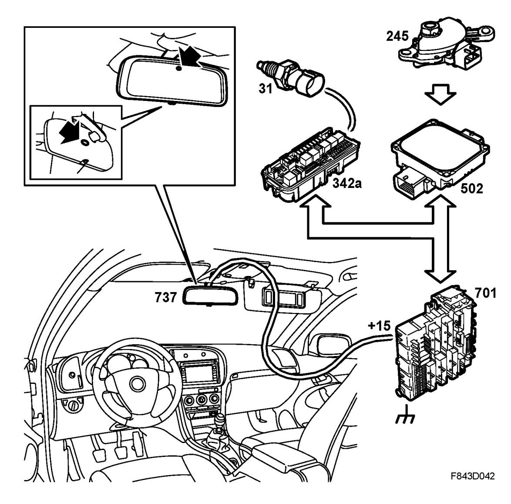

Autodimming Interior Rearview Mirror, Detailed Description
Autodimming Interior Rearview Mirror, Detailed Description
The autodimming interior rearview mirror automatically darkens when the lights of a vehicle behind shine on the mirror. The rearview mirror comprises of two sheets of glass with a film in-between, and a reflective layer on the inner glass. The long sides of the mirror glass each have a contact strip. Depending on the signals from the sensors, a voltage can be applied across the mirror causing the film to darken. This control is stepless.
The interior rearview mirror incorporates a control module that contains two sensors. One sensor is forward facing and measures the light in front of the car. The other sensor is rear facing and measures the light from vehicles behind the car. The forward-facing sensor detects when it is dark outside and accordingly activates the system. The control module receives information from the sensors and compares the strength of the light from behind with that of the light from in front.
IMPORTANT: The autodimming mirrors must not be supplied with a voltage greater than 1.5 V. A higher voltage can damage the mirrors. A standard 1.5 V battery can be used to diagnose/test the dimming function.

Current (+15) is fed from the REC via fuse 5 to the rearview mirror. The mirror is grounded via the REC to grounding point G3.
There is a switch on the rearview mirror allowing the function to be switched off manually. When reverse is engaged, the system is automatically turned off.